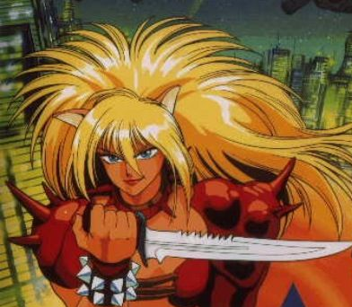

Playable Races > Fey Elf
Elves are mystical humanoid creatures attuned to worldly spirits. They came from another world eons ago. Originally an immortal race of celestial protectors, they sacrificed their infinite lifespans to experience mortal joys like love and lust.
Woodland Elves, also known as the Fey or Wildkin, are distant cousins of Sun Elves who live to protect wild places. They are very visually distinct from other Elves, being physically large (as tall as an Orc), with muscular bodies and feral spiky hair. Befitting their savage appearance, they are also infamous for their xenophobia and high level of aggression when it comes to protecting nature. Usually confined to the jungles of the Feywood, they very rarely wander out, and always for good reason.
Natural Attunement: Fey can naturally speak to all animals, as if under a communion spell at all times.
Transcendence: Elves cannot be charmed or put to sleep, and may hide in plain sight.
Racials: +2 AGI +2 STR -2 INT +4 Knowledge (Nature) +4 Handle Animal
Health: 1d8 health points per level.
Origin: The vast majority of Fey Elves reside in Tel'layl, a tree colony in the midst of the Feywood.